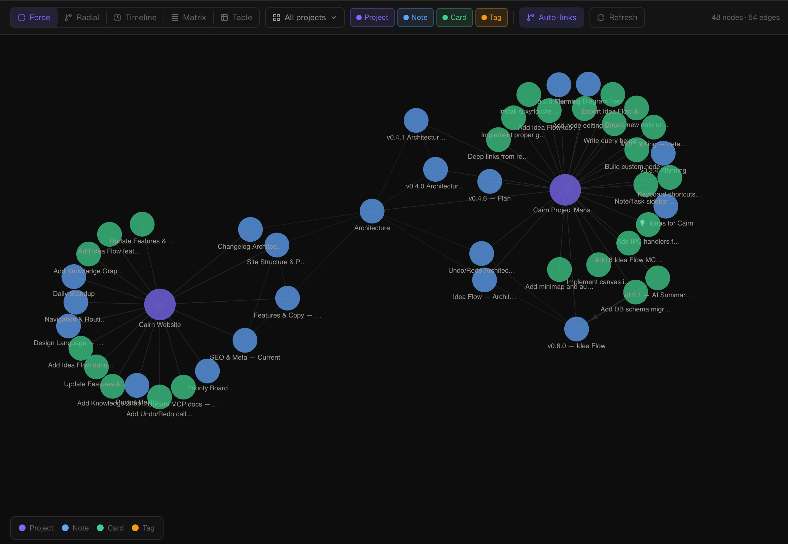

Knowledge Graph
A workspace-level view that surfaces every relationship between your projects, notes, tasks, and tags in one interactive canvas. Five visualisation modes, click-to-navigate, and full MCP access for AI research traversal.
What is the Knowledge Graph?
The Knowledge Graph is a workspace-wide view — not scoped to a single project. It maps every entity (projects, notes, tasks, tags) and every relationship between them: explicit links you've created, co-mentions detected automatically, shared tags, and more.
Unlike Idea Flow (which is a per-project freeform canvas), the Knowledge Graph is read-oriented — it helps you explore and understand what exists across your entire workspace. You can click any node to open a detail panel and navigate directly to the source.
Opening the Knowledge Graph
Click Knowledge Graph in the bottom section of the left sidebar (below the project list, above Settings). The keyboard shortcut is Cmd 5. The view loads all entities across all projects in the active workspace.

Visualisation modes
Switch between five modes using the mode selector in the toolbar:
| Mode | Description |
|---|---|
| Force graph | Physics-based layout. Nodes repel each other and edges act as springs — clusters of related content form naturally. Best for exploring unknown structure. |
| Radial tree | Hierarchy rooted at the workspace, radiating outward through projects, notes, and tasks. Cross-project chord overlays show relationships that span the hierarchy. |
| Timeline | All tasks across every project sorted by due date on a horizontal axis. Useful for spotting deadline clusters and gaps across the workspace. |
| Tag matrix | Co-occurrence heatmap showing which tags appear together most frequently. Helps identify implicit topic clusters and over-used or under-used tags. |
| Table | Flat sortable list of all notes, tasks, and projects across the workspace. Sort by name, type, project, or last updated. Useful when you know what you're looking for. |
Navigating the graph
- Click any node — opens a detail panel on the right showing the entity's title, type, project, and key metadata
- Click "Open" in the detail panel — navigates to the entity in its native view (note in Notes, task in Board)
- Scroll to zoom — standard canvas zoom in force graph and radial tree modes
- Drag to pan — click and drag the canvas background
- Hover a node — highlights all direct edges; dims unconnected nodes
Filtering
Use the filter panel (toolbar, right side) to narrow what's shown:
- By project — show entities from selected projects only
- By node type — show only notes, only tasks, only projects, or any combination
- By relationship type — show only explicit links, only auto-discovered relationships, or both
Filters apply across all visualisation modes. The active filter state is preserved when you switch modes.
Auto-discovered relationships
In addition to explicit links you create (note-to-task links, MCP-created edges), Cairn automatically detects three types of relationships:
- Co-mentions — a note that references another note's title by name
- Keyword similarity — entities sharing significant overlapping terms in their content (Jaccard similarity)
- Shared assignees — tasks assigned to the same person across different projects
Tags appear as their own nodes in the graph with edges to all tagged entities — this is structural, not auto-discovered.
Auto-discovered relationships are shown with a dashed edge style to distinguish them from explicit links. Toggle them off via the relationship type filter if you want to see only your intentional connections.
Relationship detection runs when the Knowledge Graph view opens. It does not run continuously in the background. Re-open the view to pick up changes made since it was last loaded.
MCP tool reference
Two MCP tools expose the Knowledge Graph to AI clients and external scripts:
| Tool | Read / Write | Description |
|---|---|---|
get_knowledge_graph |
Read | Returns the full workspace relationship graph as {nodes, edges}. Optional projectIds array to scope to specific projects. includeAuto flag (default: true) controls whether auto-discovered relationships are included. |
get_neighbors |
Read | N-hop breadth-first traversal from any node. Args: workspaceId, nodeId, depth (1–3). Returns all nodes and edges reachable within the specified number of hops. Useful for incremental research without loading the full graph. |
When an AI client needs to explore context around a specific note or task, get_neighbors with depth: 1 or depth: 2 is more efficient than loading the full graph. Start from a known node ID and expand outward only as needed.